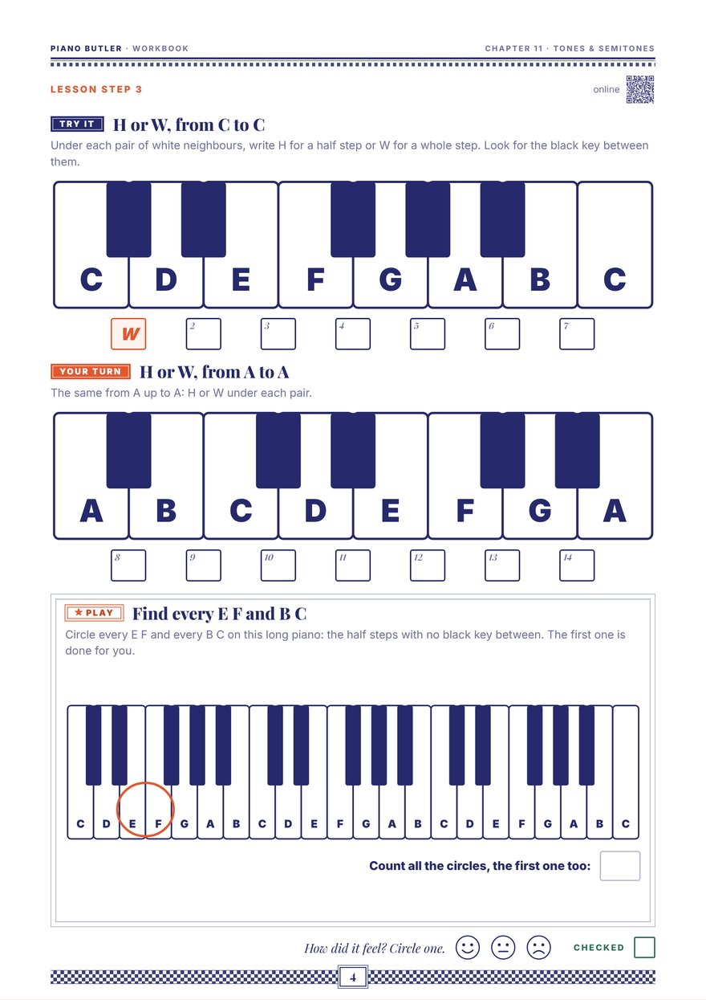

The names tell you the size. A semitone is a half step, to the very next key. A tone is a whole step: two half steps. And two signs move a note by a half step: the sharp up, the flat down.
The smallest step on the piano is a half step: from a key to the very next key, black or white, with nothing in between. It is the key's nearest neighbour. Its other name is a semitone (semi means half). Australian and British books say semitone, American books say half step. It is the same step. A half step goes up to the right or down to the left.
From D, a half step up and a half step down both land on black keys. From a black key, both land on white keys. Start on C and go up a half step, again and again, every key, black and white, to the next C: that is 12 half steps. Walking in half steps like this is the chromatic scale.
Two half steps make a whole step, with one key in between. Its other name is a tone; American books say whole step. From C, step over the black key: D is a whole step up. Black keys too: two black keys with one white key between them are a whole step apart.
Walk up the white keys letter by letter and look between them. Most letter steps have a black key in between, so they are whole steps. But twice there is none. From the last key of the small house (E) to the first key of the big house (F), and from the last key of the big house (B) to C at the next small house, there is no black key. E F and B C are only a half step apart.
Walk the white keys from C up to the next C, naming each step, and you get whole, whole, half, whole, whole, whole, half. That order is the recipe for the major scale, which the Scales chapter builds with it.
On the staff, the sign goes just before the note, on the same line or space as its head: the sharp's little box and the flat's round belly sit right on that line or space. Say the letter first, then the sign: "F sharp", "B flat". Write them the other way round: the sign first, then the note.
Show each one at the piano.

Write H (half step) or W (whole step) under each pair of white neighbours, from C up to C and from A up to A, looking for the black key between them. Then circle every E F and B C on a long keyboard and count the circles. One A4 page.
Print this pageThe whole chapter: Lesson Book + WorkbookThe same lesson with moving parts, and a seven-level drill: half step or whole step, play a half step, play a whole step, the white half steps E F and B C, name the black keys, one key with two names, and sharps and flats on the staff.
Open the lessonA semitone is the smallest step on the piano: from one key to the very next key, black or white, with nothing in between. American books call it a half step. Twelve semitones take you from one C to the next C.
A tone (a whole step) is two semitones (two half steps): there is one key in between. From C to D is a tone, because the black key C sharp sits between them. From E to F is a semitone, because there is no key between them.
Because there is no black key between them. Every other pair of white neighbours has a black key in between, so it is a tone. That is why the white keys from C to C go whole, whole, half, whole, whole, whole, half.
A black key can be reached from either side. A half step up from C, it is C sharp; a half step down from D, it is D flat. It is the same key, like an attic shared by the neighbours on each side.
No. A sharp is the very next key up, black or white. A half step up from E is the white key F, so E sharp is the same key as F; in the same way, C flat is the same key as B. Beginners mostly meet sharps and flats on the black keys, and these white-key names come later, with scales.